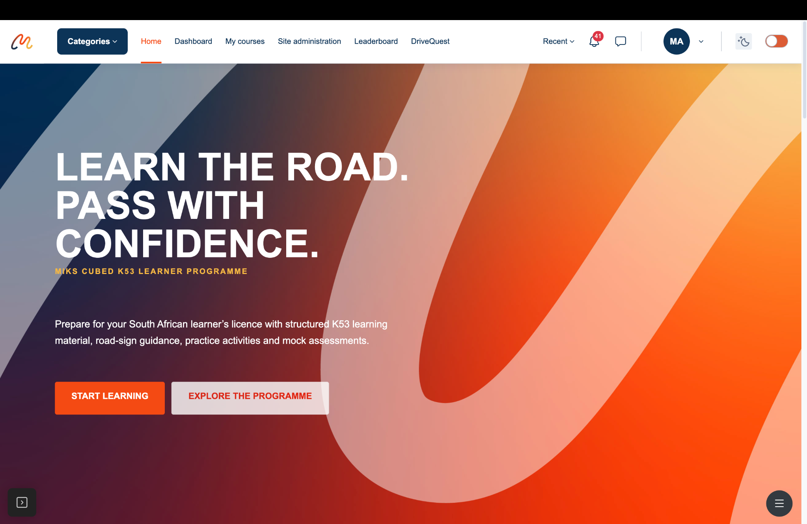

Live LMS ↗01 / 06
Learning platform · Moodle
MIKS Cubed K53 Learning Portal
Designed and developed a branded K53 learning environment for South African learner drivers. The platform combines structured theory, course progress, quizzes, mock assessments, certificates and practical learning into a single learner journey.
- Moodle / Edwiser
- PHP / MySQL
- JavaScript
- cPanel